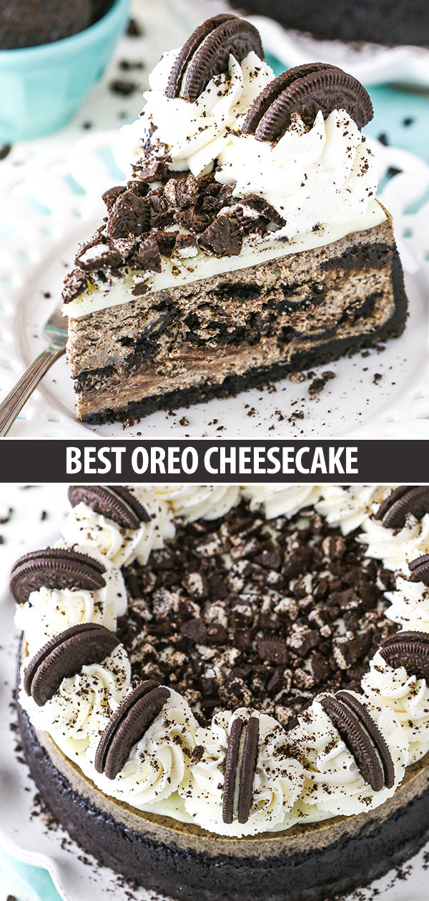

NEW YORK STYLE CHEESECAKE
ingredients
For the Crust
- Graham Cracker Crumbs
- Salted Butter
- Sugar
For the Cheesecake
- Cream Cheese: Bring your cream cheese to room temperature before making your cheesecake so that you don’t end up with a lumpy filling.
- Sugar
- All Purpose Flour
- Lemon Zest: Gives this cheesecake part of it’s signature flavor.
- Vanilla Extract
- Heavy Cream
- Eggs: This cheesecake uses both whole eggs and egg yolks. The extra yolks give the cheesecake some extra flavor, so don’t leave them out.
Steps
For the Crust
- Prepare for Baking: Preheat your oven to 325°F. Line a 9-inch springform pan with parchment paper in the bottom and grease the sides.
- Mix Ingredients: Combine the crust ingredients in a small bowl. Press the mixture into the bottom of the springform pan.
- Bake: Bake the crust for 8-10 minutes, then set it aside to cool.
- Prepare for Water Bath: Cover the outsides of the pan with aluminum foil so that water from the water bath cannot get in (see how I prepare my pan for a water bath). Set prepared pan aside.
For the Cheesecake
- Reduce Oven Temperature: Reduce the temperature of your oven to 300°F.
- Beat Ingredients: In a large bowl, beat the cream cheese, sugar and flour on low speed until completely combined and smooth. Be sure to use low speed. Scrape down the sides of the bowl.
- Add Lemon & Vanilla: Add the lemon zest and vanilla extract and mix on low speed until well combined.
- Incorporate Heavy Cream: Add the heavy cream and mix on low speed until well combined.
- Add Eggs & Egg Yolks: Add the eggs and egg yolks one at a time, mixing slowly to combine after each addition. Scrape down the sides of the bowl as needed to make sure everything is well combined.
- Pour Mixture Over Crust: Pour the cheesecake batter into the crust. Your pan will be very full.
- Assemble Water Bath: Place the springform pan inside another larger pan. Fill the outside pan with enough warm water to go about halfway up the sides of the springform pan. The water should not go above the top edge of the aluminum foil on the springform pan.
- Bake: Bake the cheesecake for about 2 hours. The edges should be set and the center should be somewhat set, but still jiggly.
- Turn Off the Oven: Turn off the oven and leave the door closed for 30 minutes. The cheesecake will continue to cook, but it’ll slowly begin to cool as well.
- Crack Oven Door: Crack the door of the oven for 30 minutes to allow the cheesecake to continue to cool slowly. This process helps prevent cracking.
- Chill: Remove the cheesecake from the oven and water bath wrapping and refrigerate until firm, 5-6 hours or overnight.
- Place on a Serving Dish: Remove the cheesecake from the springform pan and place it on a serving dish. Refrigerate it until you’re ready to serve!
Final Product:

Oreo Cheesecake
Ingredients
Crust
- Oreos
- butter
Cheesecake
- cream cheese at room temperature
- sugar
- all purpose flour
- sour cream
- vanilla extract
- eggs
- oreos
Steps
Crust
- crush the oreos and mix them with melted butter
- press it into your springform pan
- bake the crust for about 8 to 10 minutes and set it aside while you make the filling.
Cheescake
- combine the cream cheese, sugar and flour and mix it all together until it’s well combined and smooth.
- mix on a low speed (a high speed adds air to the batter)
- add your sour cream and vanilla extract.
- Then the eggs are added one at a time, mixing until combined after each.
- The final step to making the filling is to stir in the Oreo crumbs, which naturally add tasty flavor.
Final Product

Other Fun Recepies
Pumpkin Spice Pumpkin Pastries
Brown Sugar Cookies
Choclate Covered Strawberries